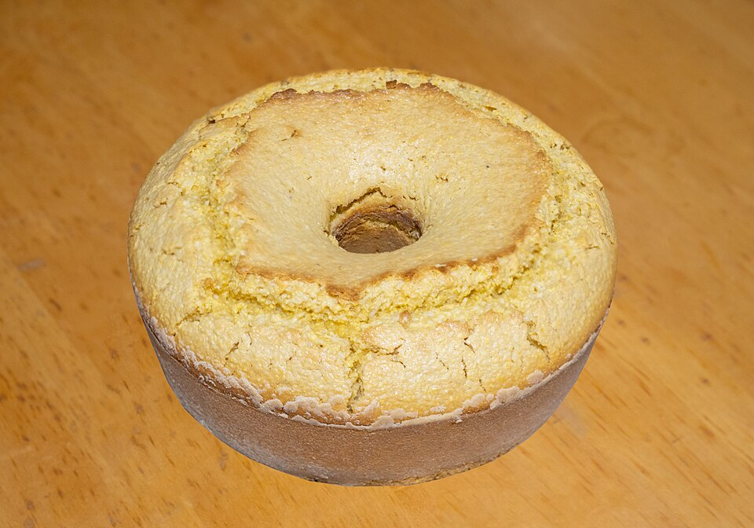
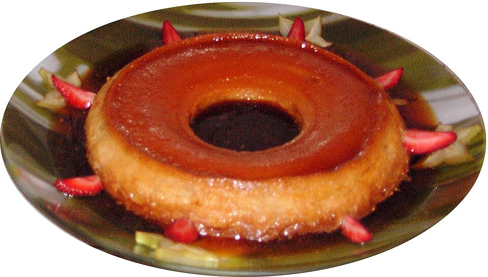
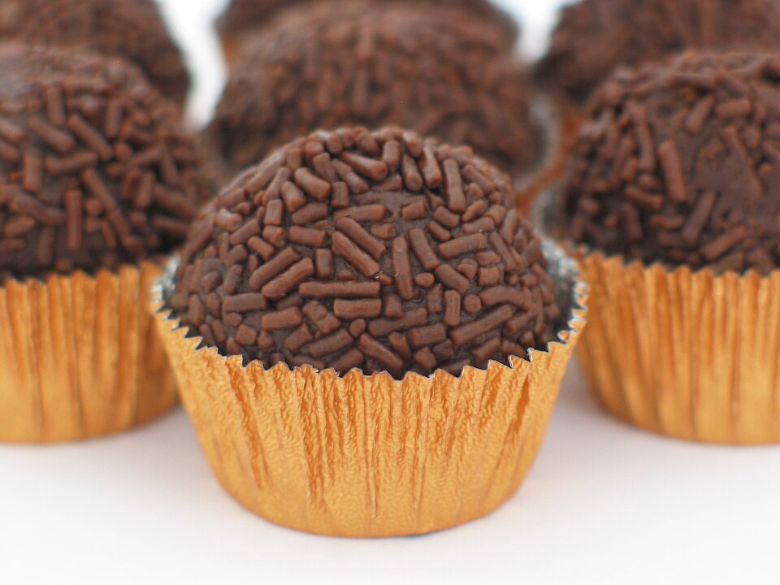
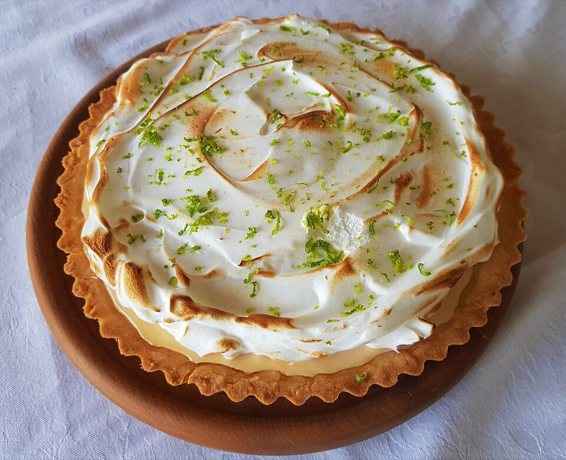

Bolo de fubá cremoso
Tudo no liquidificador, queijo ralado na massa e forno médio até a casquinha dourar sem rachar.
Um bolo para o café, um doce de colher e uma sobremesa para dividir.

Tudo no liquidificador, queijo ralado na massa e forno médio até a casquinha dourar sem rachar.

Bater devagar, assar em banho-maria e esperar a geladeira fazer o resto até o dia seguinte.

Ponto mais mole, manteiga no fim e cacau de verdade. Vai direto para a tigelinha.

Base de biscoito maisena, creme ácido na medida e raspas da casca por cima antes de servir.
Nenhuma receita encontrada. Tente outro nome ou escolha o filtro Tudo.
Antes da sobremesa, que tal escolher o prato principal?
Ir para os salgados